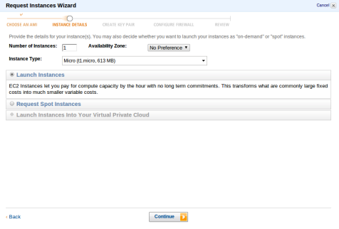
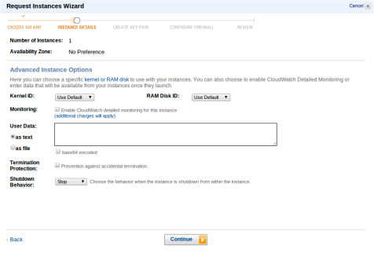
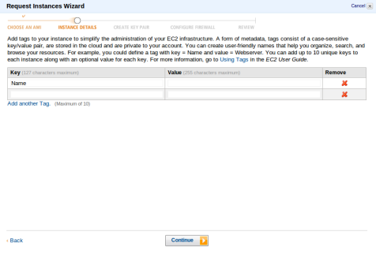
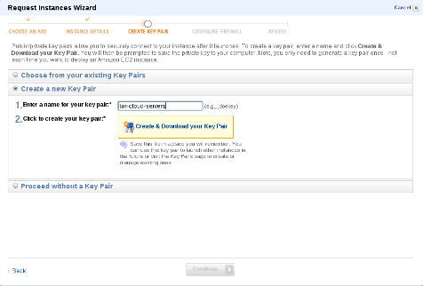
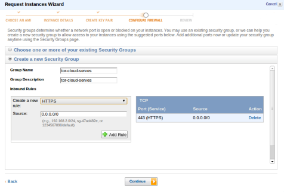
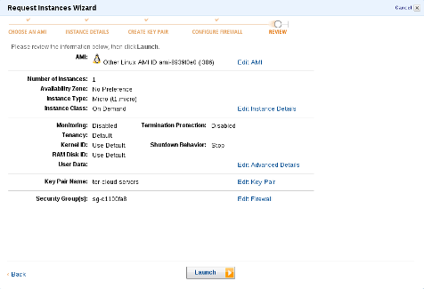
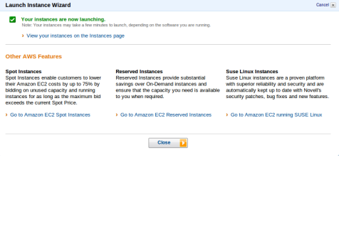

پل های تور بر روی سرویس ابر آمازون
پروژه ابرِ تور در محیطی با کاربری آسان به شما امکان ایجاد پل برای کمک به کاربران و دسترسی آنها به اینترنت بدون سانسور را میدهد. با راه اندازی یک پل، شما به پروژه تور پهنای باند هدیه و به بهبود امنیت و سرعت کاربران برای دسترسی به اینترنت کمک میکنید. درباره تور و پلها بیشتر بدانید ».
این پروژه روی پلتفرم EC2 رایانش ابری آمازون اجرا می شود که میزبان سایت آمازون و بسیاری از سایتهای بزرگ دیگر است. EC2 آمازون به کاربران اجازه میدهد که ماشین های مجازی و منابع رایانش خود را با شرایط انعطاف پذیر و بصرفه راه اندازی کنند. درباره EC2 آمازون بیشتر بدانید »
تنطیم یک پل تور روی EC2 آمازون راحت است و فقط چند دقیقه از شما زمان می گیرد. ایمیجی با سیستم به روز رسانی خودکار پکیج و پورت فورواردینگ از قبل تنظیم شده است. پس لازم نیست که شما نگران کار نکردن و یا نگرفتن بسته های به روز رسانی امنیتی تور روی سرور باشید.
با ابرِ تور دست به کار شوید »
چقدر هزینه دارد؟
برای کمک به شروع استفاده مشتریان از رایانش ابری، آمازون ردیف رایگانی را معرفی کرده است. ایمیج های ابرِ تور همگی میکرو اینستنس (micro instance) هستند، مشتریان جدید میتوانند یک میکرو اینستنس یا سرور مجازی کوچک را برای یک سال کامل بصورت رایگان اجرا کنند. همچنین ردیف رایگان AWS شامل ۱۵ گیگابایت پهنای باند خروجی رایگان در ماه میشود
ایمیج های ابرِ تور بهنحوی تنظیم شدهاند که در ماه بیشتر از ۴۰ گیگابایت پهنای باند خروجی استفاده نکنند. ما تخمین زده ایم
مشتریانی که واجد شرایط ردیف استفاده رایگان نباشند، برای یک سرور مجازی قرار گرفته در us-east-1 (ویرجینیا) هزینه ای تا سقف ۳۰ دلار در ماه پرداخت خواهند کرد.
مشتریانی که واجد شرایط استفاده از ردیف رایگان هستند اما پل هایی اجرا میکنند که بیشتر از ۱۵ گیگابایت در ماه پهنای باند خروجی استفاده میکند، برای یک سرور مجازی قرار گرفته در us-east-1 (ویرجینیا) هزینه ای تا سقف ۳ دلار در ماه پرداخت خواهند کرد.
هزینه اجرا و راه اندازی یک پل روی ابر آمازون بستگی به منطقه ای دارد که شما پل را در آن قرار میدهید.
لطفن از http://aws.amazon.com/free/
و AWS pricing
page برای اطلاعات بیشتر دیدن فرمایید.
ثبت نام کنید
قبل از راه اندازی پل، شما نیاز به ثبت نام برای حساب کاربری سرویس وب آمازون (AWS) دارید.
همین حالا ثبت نام کنید!
به محض فعال شدن حساب کاربری، آمازون برای شما یک ایمیل خواهد فرستاد.
یک منطقه انتخاب کنید
لطفن برای انتخاب محل قرار گرفتن سرور مجازی ابرِ تور، روی یکی از مناطق زیر کلیک کنید. یک ایمیج از قبل تنظیم شده انتخاب، و شما به کنسول مدیریت AWS هدایت خواهید شد. برای اینکه بدانید این کار چقدر هزینه خواهد داشت از صفحه اصلی بازدید کنید.
Obfsproxy Bridges (required ports: 22, 443, 52176)
Private Bridges (required ports: 22, 443)
فرآیند گام به گام
بعد از انتخاب منطقه، شما به کنسول مدیریت آمازون هدایت خواهید شد. به سادگی مراحلی که در تصویرهای زیر آمده است را دنبال کنید و در ظرف چند دقیقه پل شما به کار خواهد افتاد.







روی "Continue" کلیک کنید. هیچ تغییری اینجا لازم نیست.
گاو اول
روی "Continue" کلیک کنید. هیچ تغییری اینجا لازم نیست.
گاو دوم
روی "Continue" کلیک کنید. هیچ تغییری اینجا لازم نیست.
گام سوم
روی "Continue" کلیک کنید. هیچ تغییری اینجا لازم نیست.
گام چهارم
"Create a new Key Pair" را انتخاب کنید، برای نام key pair بنویسید "tor-cloud-servers"
و روی "Create & Download your Key Pair" کلیک کنید. اگر میخواهید با استفاده از SSH به نمونه خود متصل شوید به این کلید احتیاج خواهید داشت.
گام پنجم
"Create a new Security Group" را انتخاب کنید و برای اسم و توضیح گروه بنویسید "tor-cloud-servers". شما به درست کردن دو قانون احتیاج دارید. HTTPS و SSH. از منوی کشویی "Create a new rule" گزینه "HTTPS" را انتخاب کنید و روی "Add Rule" کلیک کنید. همین کار را برای SSH هم انجام دهید و روی "Continue" کلیک کنید.
گام ششم
روی "Launch" کلیک کنید
پرسشهای متداول (FAQ)
۱- چقدر هزینه خواهد داشت؟
هیچ هزینهای از شما برای اجرای یک ایمیج ابرِ تور از طرف Tor Project دریافت نخواهد شد. اگرچه Amazon برای اجرای سرورهای مجازی، مطابق با تعرفهشان، این کار را خواهد کرد. برای اطلاعات بیشتر به بخش
چقدر هزینه خواهد داشت؟ در صفحه اول مراجعه کنید.
۲- سرور مجازی راه اندازی شد و درحال کارکردن است، قدم بعدی چیست؟
به محض راه افتادن نمونه، شما دیگر لازم نیست که کاری انجام دهید. Tor بصورت یک پل اجرا خواهد شد، تایید میکند که از بیرون قابل دسترسی است، و به مرکز اصلی پلها اعلام موجودیت میکند. بعد از آن، آدرس پل شما به کاربران داده خواهد شد.
۳- چگونه آدرس پل خودم را پیدا کنم؟
برای پیدا کردن آدرس پل خود، به کنسول مدیریت AWS وارد شوید، نمونه خود را پیدا و روی آن کلیک کنید. نیمه پایینی صفحه اطلاعاتی را از قبیل Public DNS راجع به نمونهای که انتخاب کردهاید میدهد. اگر کنسول مدیریت AWS میگوید که آدرس Public DNS سرور شما
ec2-192-0-2-27.compute-1.amazonaws.com است، پس شما میدانید که آیپی آدرس شما 192.0.2.27 خواهد بود. تمام پلها روی پورت 443 اجرا میشوند، پس آدرس پل شما 192.0.2.27:443 خواهد بود.
۴- چطور چک کنم که پل من درحال اجراست؟
دو راه برای اینکه چک کنید پل شما در حال اجراست وجود دارد. یا میتوانید وارد نمونه خود شده و /var/log/tor/log را چک کنید، یا با استفاده از Tor به پل خودتان متصل شوید. برای راهنمای چگونگی استفاده از پلها با Tor سایت پروژه تور بازدید کنید.
۵- نمیتوانم با نام کاربری root وارد شوم، چه ایرادی وجود داره؟
وقتی کلیک راست میکنید و connect را انتخاب میکنید، AWS به شما پیشنهاد میکند که با نام کاربری root وارد شوید. این اشتباه است. اگر میخواهید که با SSH به سرور خود متصل شوید باید از نام کاربری ubuntu استفاده کنید.
۶- چگونه میتوانم یک نمونه را متوقف یا منحل کنم؟
برای توقف یا انحلال یک نمونه، به کنسول مدیریت AWS وارد شوید، نمونه خود را پیدا و روی آن کلیک راست کنید، شما میتوانید "Stop" و یا "Terminate" را انتخاب کنید. "Stop" نمونه شما را بصورت عادی خاموش (متوقف) میکند و به شما اجازه میدهد که بعدن آن را دوباره راه اندازی کنید. "Terminate" نمونه شما را از روی حساب کاربریتان در AWS پاک خواهد کرد.
۷- چگونه آدرس آی پی نمونه خود را تغییر دهم؟
برای تغییر آدرس آی پی نمونه خود به کنسول مدیریت AWS وارد شوید، نمونه خود را پیدا، روی آن کلیک راست و گزینه "Stop" را انتخاب کنید. به محض اینکه نمونه بصورت کامل ایستاد و خاموش شد، دوباره روی آن کلیک راست کرده و گزینه "Start" را انتخاب کنید. نمونه شما پس از راه افتادن، آدرس آی پی جدیدی خواهد گرفت.
۸- چه چیزی درون فایل تنظیمات Tor قرار دارد؟
فایل تنظیمات Tor که توسط ایمیجها تنظیم شدهاند را میتوانید اینجا پیدا کنید.
۹- آیا ایمیج ها، بستههای به روزرسانی را بصورت خودکار دریافت و نصب خواهند کرد؟
بله، تمامی ایمیجها با بستهی unattended-upgrades تنظیم شدهاند. به این معنی که سیستم شما بصورت خودکار بستههای به روزرسانی را دریافت و نصب خواهد کرد.
۱۰- ممکنه من را از انتشار ایمیجهای جدید مطلع کنید؟
انتشار ایمیجهای جدید در توییتر, identi.ca, وبلاگ انگلیسی و فارسی ما، و همچنین در خبرنامه tor-talk اعلام خواهد شد.
۱۱- باگی که با آن مواجه شدم را کجا گزارش کنم؟
اگر فکر میکنید باگی که پیدا کردهاید مربوط به ایمیجِ ابرِ توری که ما ارایه کردیم است، لطفن آن را گزارش کنید یا ایمیلی به آدرس help AT rt.torproject.org بفرستید.
۱۲- آیا هیچ کانال IRC وجود دارد که من بتوانم سوالات مربوط به ابرِ تور را بپرسم؟
بله، به سادگی میتوانید به #tor روی irc.oftc.net بپیوندید و سوال خود را بپرسید. شاید کمی زمان ببرد که ما به شما پاسخ بدهیم. پس لطفن صبور باشید.
۱۳- سوالی دارم که اینجا پاسخ داده نشده، چه کار کنم؟
لطفن به help AT rt.torproject.org ایمیل بزنید.